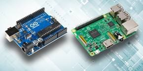
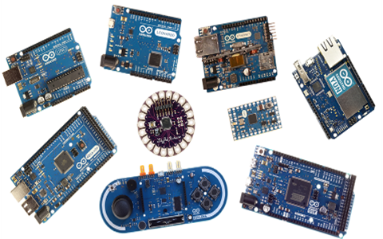

IT Technologies - Raspberry Pis

Gudino, M., 2018. Raspberry Pi 3 vs Arduino Uno Rev3. [image] Available at: [Accessed 3 May 2021].
The raspberry pi is a small computer which usually costs around $35, but it is not some cheap device that will break easily and get ruined in fact in can do many things. The Raspberry Pi has been used to make over hundreds of projects ranging from building tablets, robots, and even smart mirrors. Not only that it has been experimented in the international space station. Getting started to be using this great device is not that hard to and is very cost efficient. But while working with the raspberry pi you need to know that it's only a board and you will need to purchase other components such as a HDMI cable, a mouse, monitor and a keyboard. Once all your cables are plugged in you need to download NOOBS(New-Out-Of-Box-Software) which is basically installing the OS onto the Pi. After that let your imagination run wild and start doing your own research.
The Arduino is a physical circuit bord which is sometimes called a microcontroller and related to the circuit board there is also a software called IDE (Integrated Development Environment) which runs on your computer and allows the user to write up their own code and program the Arduino to do certain task with ease. Arduino popularity is based on how it is one piece of software and does not require other hardware such as a programmer to program it since a USB can be used to program the device using your laptop. Since the raspberry PI uses an easier version of C++ which makes it easier to learn and program the device. These small computing devices have been around for a while as Arduino was released in 2005 and raspberry pi and makey makeys were released in 2012. So, it really is not a modern technology. Using devices such as these allows people to create their own small project without spending too much money. You can make any project thing that your imagination takes you. Some project that you can make using these devices are your own light detectors that could turn off your room lights or turn of your fan using your own voice or sensors or even sound such as clapping and the best part of it you can make it yourself. Raspberry Pi’s are tiny cheap computers which are around the size of a deck of cards and some being the size of a stick of a gum. The raspberry pi runs on Linux compared to the famous MacOS and windows which most devices run. The Raspberry Pi has all the feature to make your own laptop and add your own features.
These devices are a great introduction and to people who want to either practice programming or learn new programming language. These devices make it easy and affordable to create things. There are many other similar devices to the Arduino and the raspberry pi such as the Banana Pi M3, Odroid XU4, Nanopi NEO4, UDOO BOLT V8 and UDOO X86 II ULTRA. These are all adapted from the Arduino and evolved. Raspberry Pi’s are tiny cheap computers which are around the size of a deck of cards and some being the size of a stick of a gum. The future of Arduino will allow business to create products at a lower cost and test their product and create better products. The Arduino will allow business to change up their products at a lower cost such as a microwave since if an Arduino board is used your able to change the interface and make it brand new. Not only that Arduino boards will allow third world countries to do things that will never have thought about before such as upgrading their medical devices to low-cost PLC controllers which allows them to save money and use that money somewhere else to develop their country. The Future of Raspberry Pi looks good as Linux is getting quite popular and as people are starting to create better software you never know as one day Linux might overtake windows. As more people learn about what these devices do and what they are capable of doing then we can see great change to the area of technology all around the world
The impact of this development will allow modern technology to be created which could benefit others. The newer versions of the Arduino or the Raspberry PI could either have a really could impact on society or a harmful impact on society. Depending on the company that are making these newer devices such as Banana Pi M3, Odroid XU4, Nanopi NEO4, UDOO BOLT V8 and UDOO X86 II ULTRA there are certain questions to be asked such as are they cost efficient and can anyone pick them and used them and start creating their own things like the Arduino and the Raspberry PI. As old devices such as the Arduino and Raspberry Pi have been used countless times since they have been released and many projects have been made using them. But the newer devices have not been used as much as Arduino and Raspberry Pi so there is no insurance on whether these new devices that are coming in the future might be helpful to society or a hassle and not knowing. The way Arduino and the raspberry PI have changed the world is it allowed others to purchase a small device which they could attach their own components and learn the code to it and program their own technology. Such as a water purifier which the Arduino can detect how dirty the water is and use another device such as raspberry Pi to control it. Anything can be done through the Arduino and the Raspberry Pi. You can create many things that you could have not imagined before. These new devices will create an easier job environment for others, and it make people lives simpler. As the Arduino can create projects which can benefit others. Whereas something like the Raspberry Pi allows users to create their own laptop and create different software which could be better than most and creates a great learning experience.

ELPROCUS, 2021. Types of Arduino Boards. [image] Available at: [Accessed 5 May 2021].
In my daily life this will not really affect me unless I get my hands on it myself and start using these devices myself and start creating stuff. But I might regret it in the future as these tools are getting more notice in the community and getting used more by business and people to create things that most companies such as Apple or Microsoft using more expensive equipment to create such programs whereas you can buy these tools for like 50 dollars or maybe even cheaper and create either a similar program or maybe even better. I might not feel the affect but the opposite as I will see it as an op and use it to my benefit and allow me to gain more knowledge and skills to create more things and possibly create something that could benefit others. Nothing will be different for me as I am very familiar with these type of technologies as I learnt in high school. But the new device that are coming out will be different as I have never seen or used them and getting to know what their functions are. The way it will affect my friends and families is that they won’t be able to experience these new devices and use them to create things as they won’t have the knowledge to do so. So, friends and families might be missing out on an opportunity to create things. But on the had they can experience these innovative technologies entering their workforce as people start creating software and tools using Arduino, Raspberry Pi or other devices to create a simpler experience for family and friends. Most Family and friends might already be experiencing these new technologies already getting implemented in their workforce as these small devices are getting more popular.
Arduino.cc. 2021. Arduino - AboutUs. [online] Available at: https://www.arduino.cc/en/Main/AboutUs [Accessed 28 April 2021].
Cawley, C., 2021. 26 Awesome Uses for a Raspberry Pi. [online] MUO. Available at: https://www.makeuseof.com/tag/different-uses-raspberry-pi/ [Accessed 27 April 2021].
Hasan, M., 2021. The 15 Best Arduino Projects That You Can Build Right Now. [online] UbuntuPIT. Available at: https://www.ubuntupit.com/top-15-best-arduino-projects-that-you-can-build-right-now/ [Accessed 28 April 2021].
Opensource.com. 2021. What is a Raspberry Pi?. [online] Available at: https://opensource.com/resources/raspberry-pi [Accessed 28 April 2021].
Kingsley-Hughes, A., 2021. Best Raspberry Pi alternative in 2021: Banana Pi, Odroid, NanoPi, and more | ZDNet. [online] ZDNet. Available at: https://www.zdnet.com/article/best-raspberry-pi-alternative/ [Accessed 28 April 2021].
Gunjal, S., 2021. The Future is Arduino. [online] Medium. Available at: https://medium.com/@suyoggunjal/the-future-is-arduino-63873e765c91 [Accessed 4 May 2021].
Learn.sparkfun.com. 2021. What is an Arduino? - learn.sparkfun.com. [online] Available at: https://learn.sparkfun.com/tutorials/what-is-an-arduino/all [Accessed 28 April 2021].
Heath, N., 2021. What is the Raspberry Pi 3? Everything you need to know about the tiny, low-cost computer | ZDNet. [online] ZDNet. Available at: https://www.zdnet.com/article/what-is-the-raspberry-pi-3-everything-you-need-to-know-about-the-tiny-low-cost-computer/ [Accessed 26 April 2021].